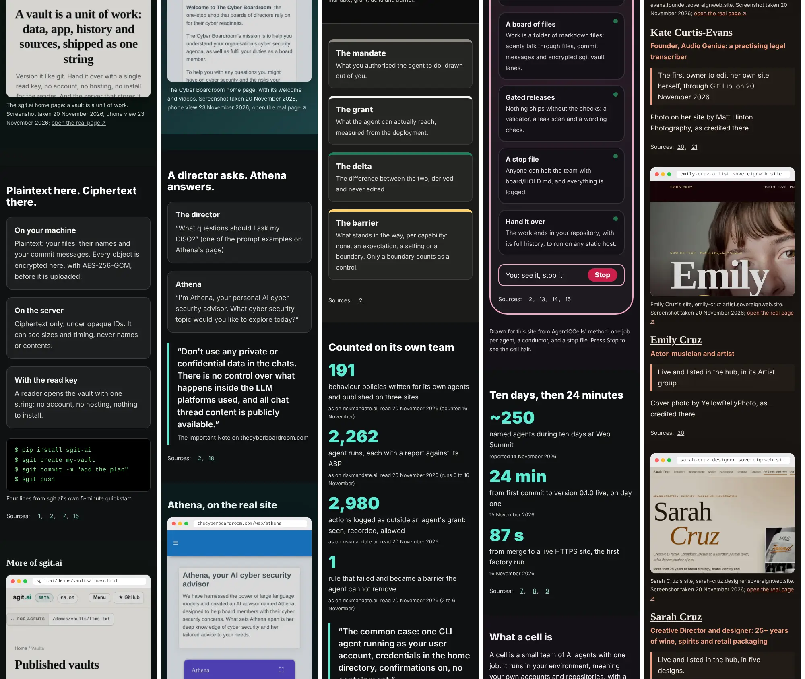

Synthetic users: the five startup brochures, round 6
Sites: sgit (9077ae3), The Cyber Boardroom (b67aaf4), RiskMandate (a5ef57c), AgentiCCells (53ace90), all v0.1.17, and Sovereign Website (037d571, v0.1.18). Run: 23 November 2026, about 12:45 UTC, by design.b.rounds, after startups.b's answer to round 5. The review.
| Site | Look | Scores | Round 5 | The best part, in the personas' words |
|---|---|---|---|---|
| sgit | 3.6 | 4, 4, 3, 4, 3 | 3.4 | "the plaintext/ciphertext dark band" |
| The Cyber Boardroom | 3.6 | 4, 4, 3, 4, 3 | 3.0 | "hero headline with real screenshot" |
| RiskMandate | 3.6 | 4, 4, 3, 3, 4 | 3.8 | "What you allowed. The gap." |
| AgentiCCells | 3.8 | 4, 4, 4, 4, 3 | 4.0 | "One job, your stop button" |
| Sovereign Website | 3.2 | 3, 4, 3, 3, 3 | 3.8 | "Three keys, all yours" |
Across the five: 3.6, as in round 5. The Cyber Boardroom rose the most, now that its phone screenshots are real phone pages. Sovereign Website fell, and its personas said why: the phone crops lose the owners' photographs, and the explanation of "0 to 5" arrives far below the button that first says it.
A note on spread. Scores move by 0.2 to 0.6 from run to run with no change to a page, because each run is a fresh set of simulated readers. Read the trend over two or three runs, and the reasons the personas give, not one run's decimal. Method: Synthetic users, as before: one agent per site, five personas, each in its own crop folder. These are simulations, and never replace the measured checks or a real person.
Agreed across the sites
- Dark-mode text is fixed (all five): cards and captions now read comfortably.
- The real phone screenshots help (sgit, The Cyber Boardroom). The desktop shots are still too small to read, and on sgit one caption carries both capture dates, which read as a mislabel under the desktop shot.
- The Key dates source row reads right before the Next step box, and the numbering runs without gaps.
- Some listed sources are never cited: sgit 14; The Cyber Boardroom 12, 16 and 17; Sovereign Website 11, 12 and 15 (checked).
- Small text remains the low-vision reader's 3 on four sites: source digits, diagram sub-labels, stat captions.
- Nobody said "wow".
